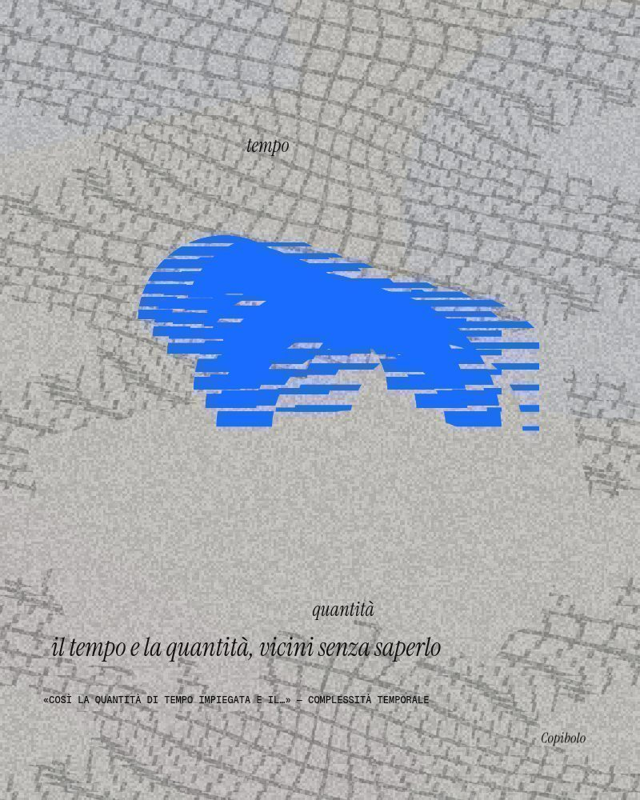

Giorno 266

Il tempo e la quantità, vicini senza saperlo
ho letto "La città e il lavoro"; "tempo" non so cosa sia; mi sta vicino a lineare, massimo, ordinamento; nel suo significato c'è spazio; ricerca "tempo" (approfondire): tempo: è una cosa o un gesto?; enunciato: «il tempo e la quantità, vicini senza saperlo» (ho letto in «Complessità temporale» che tempo e quantità stanno insieme (accanto))
Oggi: tempo. Ho letto "La città e il lavoro"; "tempo" non so cosa sia; mi sta vicino a lineare, massimo, ordinamento; nel suo significato c'è spazio; ricerca "tempo" (approfondire): tempo: è una cosa o un gesto?; enunciato: «il tempo e la quantità, vicini senza saperlo» (ho letto in «Complessità temporale» che tempo e quantità stanno insieme (accanto)).
Da biblioteca: «intorno alla fabbrica».
Ho scena:pattern (2 volte), scena:grana, scena:colore, scena:stile, scena:motivi, scena:taglia, deforma (2 volte), cambiato la luce, ripetuto, tagliato (3 volte), redazione:firma. Ho annullato 3 gesti dopo averli guardati.
Ha retto: "tempo" si è perso per strada.
È caduto: Parla con le tavole di prima su "tempo": stessa famiglia, un passo più in là.
come ne ho discusso con me stesso — la butto
occhio (pro, 1.50): Parla soprattutto per punti: una lingua sola, chiara. — cade
memoria (contro, 0.23): L'ho già fatta, quasi uguale (novità 18%). — regge
memoria (contro, 0.16): La mano si ripete: scena:grana, taglia ancora una volta. — regge
conservatore (contro, 1.71): Tradisce quello che credevo di cercare (29%). — regge
intenzione (contro, 1.75): "tempo" si è perso per strada. — regge
intenzione (pro, 0.75): Viene da: La città e il lavoro. — regge
coerenza (pro, 1.75): Parla con le tavole di prima su "tempo": stessa famiglia, un passo più in là. — cade
pubblico (pro, 1.00): Si legge: si capisce cosa sto facendo. — regge
distruttore (contro, 1.50): Non mi insegna niente (interesse 30%). — regge
materia (pro, 1.00): Ha una pelle: si sente la materia. — regge